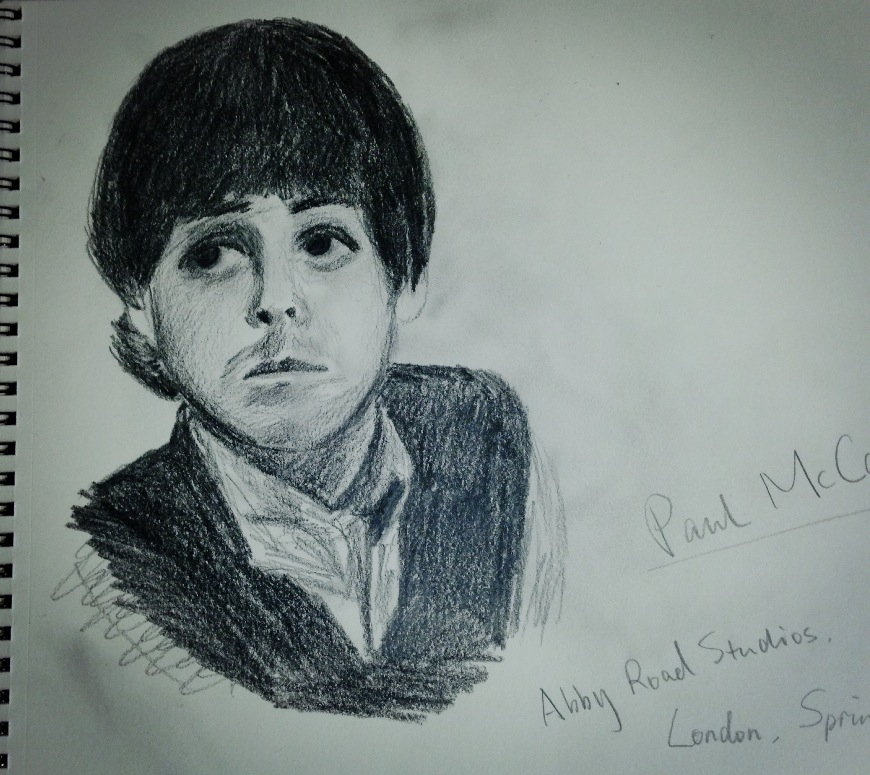
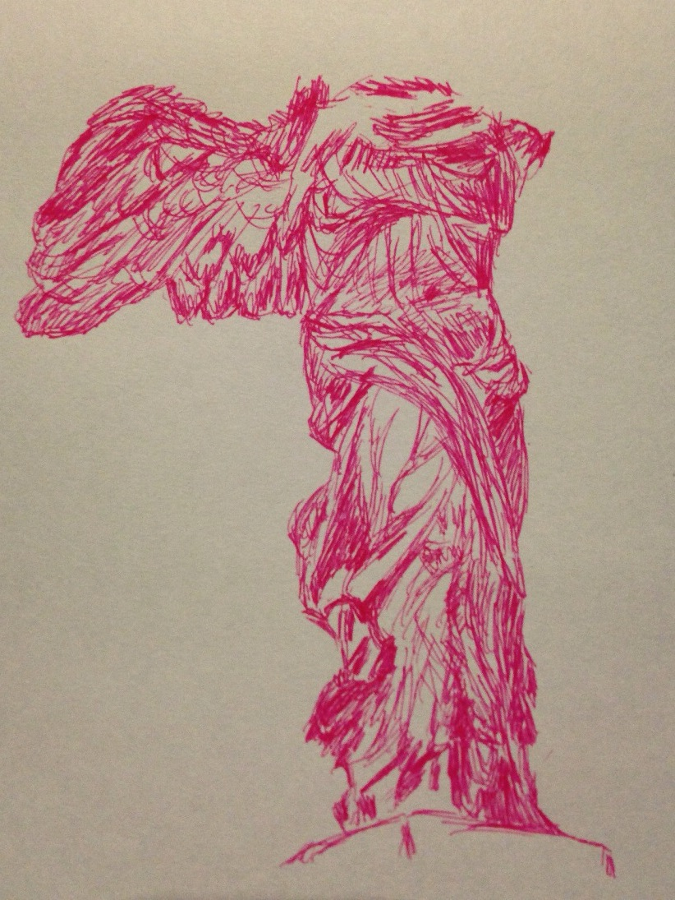

facebook: sheryl zhang
instagram: iamsherylzhang
Paul McCartney. About when I became a Beatles fan.
drawn in December 2013

Neal Caffrey / Matt Bomer
drawn in December 2013
the trip to Paris in summer 2013 was what motivated me to try drawing.
well I like to believe that all great artists started with doodles.
this was one of my earliest, when I didn't even have a set of pencils, and I used a muji ball-point pen.
